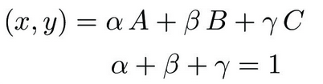
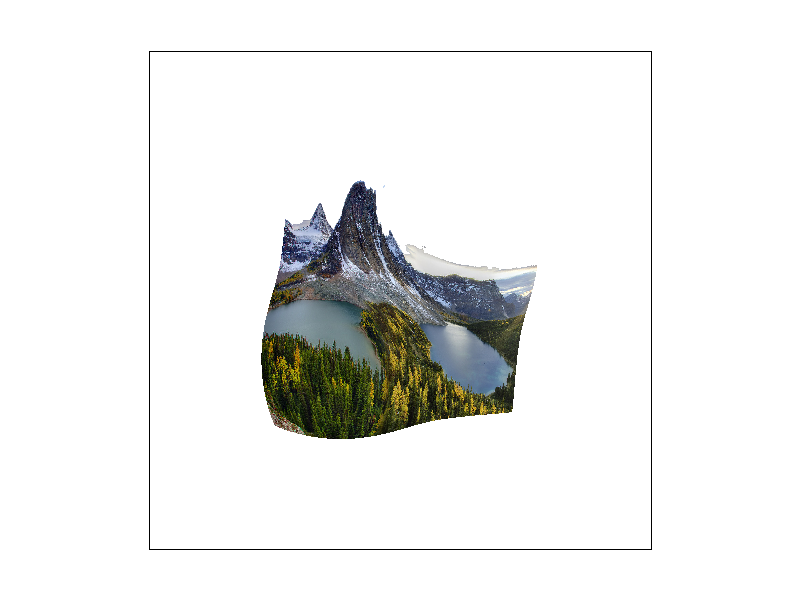

CS184/284A Spring 2025 Homework 1 Write-Up
Names: Anousha Athreya
Link to webpage:https://cal-cs184-student.github.io/hw-webpages-aaathreya/hw1/index.html
Link to GitHub repository: https://github.com/cal-cs184-student/sp25-hw1-anousha/

Overview
In this homework, I've learned the basics of visualization centered around rasterizing images, including drawing triangles, supersampling, transform types such as rotating, translating, and scaling, texture mapping, and level sampling with mipmaps for texture mapping.In lecture, we had discussed a rasterization pipeline, that has core concepts, sampling, antialiasing, and transforms and is fundamental process that converts vector-based graphics (SVGs) into pixel-based images. In this project, I learned the groundwork for graphics rasterization, blending colors and the mathematical background (barycentric coordinates, rotations, transofrmation, texture mapping), that contributes to rendering images and shapes.
Task 1: Drawing Single-Color Triangles
The goal of this task is to implement a simple rasterizing triangle algorithm without supersampling using point-in-triangle tests by iterating through the entire image. First, we compute the bounding box of the image by finding the x-min and x-max coordinates, as well as the y-min and y-max coordinates, as the smallest rectangle that encloses the triangle.Following computing the bounding box, I iterate through each pixel inside the bounding box, identifying the pixel center, which is (x + 0.5, y + 0.5) to see if the pixel is inside the triangle. To check whether the pixel center is inside the triangle, I identify the triangle using the intersection of three half-planes, through three line tests with the format of the implicit line equation:
Since the implicit line equations calculated for each of the half-planes to construct the triangle, they are non-negative if (nextX, nextY) is on the ‘inside’ of the triangle edge. In order for a pixel center to be inside or on the boundary of the triangle, it must satisfy all three edge equations. If true, I indexed into the sample buffer, which is an array of pixels which represent the matrix, and index based on the values of the bounding box to set that pixel equal to the color passed into the function.
My algorithm is no worse than one that checks every pixel within the bounding box of the triangle because it iterates through the bounds of the bounding box and performs point-in-triangle tests for each pixel to check whether it is inside the three half edges that construct the triangle. The complexity for my method in Task 1 has the same O-notation as the naive approach, it is no worse in complexity.

|
Task 2: Antialiasing by Supersampling
The supersampling algorithm that I use for rendering images is used to improve the quality of rasterized images by reducing jagged edges, or 'jaggies' that occur at the edge of triangle boundaries. In the rasterize_triangle function in rasterizer.cpp, we intially check the winding order of the edges, to ensure that the triangle has the correct orientation (counter-clockwise) when shading in for Task 2. If it is not in the correct order, then we swap the vertices to ensure it colors correctly. Next, it uses a bounding box on the current image to optimize how many times it samples the pixels. Instead of the naive rasterization we did in Task 1, we split up each pixels into multiple pixels per the sample rate and iterates over each subpixel to determine whether it falls into the triangle, and store color values in the supersample buffer, such that there were multiple colors for each subpixel sample per pixel. Similarly to the naive rasterization, we compute three lines for the triangle edges and check whether the subpixel is inside or on the boundary for the triangle edges. If it is, then we set that subpixel equal to the color that is passed into the function.Below, we show the effectiveness of supersampling by showing how the triangle is antialiased at different sampling intervals. At lower sampling intervals, we see jagged edges, and antialiasing appear with hard transitions between the triangle and background pixels. At higher sampling intervals, there are less jaggies and we see the gap in the triangle begin to be bridged; we see significantly smoother transitions, and soft transitions between the triangle and the background.

|

|

|
Task 3: Transforms
Below, I used the rotate and translate functions to move the arms of the cube man to show that it was waving. To the left is the original man generated by the code, and the second is the modified man. I moved the left arm down, the right arm out, and changed the color of the man's outfit to give the illusion that it was waving!

|

|
Task 4: Barycentric coordinates
In simplistic terms, barycentric coordinates are used to represent the points in the triangle as a weighted average of the vertices.Per the below, if we initialize the color of each triangle vertex to be something different, such as dark blue, purple, and light blue, we see each pixel as it approaches the intersections of those two colors to average out the values from each of the weighted vertices, and form a gradient. Points that are closer to a particular vertex have a greater weight, and therefore inherit more of the color. The equation for a point in barycentric coordinate is demonstrated by the below, where &alpha, &beta, and &gamma are the vertex weights that always equal to one:
|  |

|

|
Task 5: "Pixel sampling" for texture mapping
Pixel sampling is the process of applying pixels in an image correspond to 3D model space or 2D pixels of an image; in the context of texture mapping, it applies a 2D image by mapping texture coordinates (u, v) in texture space to 3D surface points. We use triangle interpolation for smoothing texture coordinates at vertices, using barycentric coordinates. A texel is the equivalent of a pixel in 2D screen space, and is used in texture space, together forming a texture that is mapped onto a 3D object.In the rasterize_textured_triangle function, we utilize barycentric coordinates and supersampling to create finalColor, which is used in tex.sample(), or texture sampling, which retrieves a color value given the texture coordinates determined in finalColor. In the last step, we set subpixels in the samplebuffer based on the sample rate to the final color value.
When comparing nearest sampling and bilinear sampling, nearest sampling only uses the value of the nearest pixel, while bilinear sampling calculates a weighted average of the four nearest pixel. Therefore, bilinear sampling should have smoother transitions between the background, and display less jagged edges and less drastic color transitions.
If we look at the images below, we can identify several differences between nearest and bilinear sampling. In nearest sampling, it selects the closest texel based on the texture coordinates and at smaller sampling rates, has a very pixelated appearence without smooth transitions between color pixels. In the bottom left, which is nearest sampling at 16 samples per pixel, there is a less blocky appearance, but limited smooth color transitions, although it does seem a lot more pleasing to the eye. On the right side is bilinear sampling, where the one above at 1 sample rate is very blocky without significant color transitions, and the bottom right, which is a sample rate of 16, is incredibly smooth with smooth color transitions.

|

|
|
|

|
Task 6: "Level Sampling" with mipmaps for texture mapping
In Task 6, we conduct level sampling, which is a technique to determine which mipmap level to use when sampling a texture. A mipmap is a small version of the original texture, such as each 'level' is halved of the original level size. If a mipmap, untouched, has a resolution of 512x512, then level 1 will have a resolution of 256x256 and so forth until it reaches a resolution size of 1x1, which is the smallest value a mipmap can be. When rendering an object, level sampling is used to choose the appropriate mipmap level depending on the image. If the object is farther away, a higher mipmap level can be used for a lower resolution texture, which improves the rendering speed.In the code, we implement three types of level sampling: L_ZERO, L_NEAREST, and L_LINEAR. L_ZERO is when there is no mipmapping, so we only sample from level 0 mipmaps which are full resolution texture values. L_NEAREST is used in context with the appropriate mipmap sampling by choosing the nearest appropriate mipmap level and using that for the level sampling. L_LINEAR uses trilinear filtering, such that it blends between two adjacent mipmap levels and uses it in the level sampling.
Pixel sampling is used for determining a texture's color for a given texel when we map a 2D texture onto a 3D object. We can think of texels as texture pixels, which is the smallest unit of a texture image that composes a texture. We utilize two different methods of pixel sampling: P_NEAREST, and P_LINEAR, which is the bilinear sampling type that we see in Task 5. While using nearest sampling is fast by matching the current pixel to the value of the nearest one, it causes blocky images without smooth transitions with the background and low memory usage. In contrast, bilinear sampling is slightly slower in terms of speed, but provides smoother transitions by averaging out the values of the colors from nearby pixels. L_ZERO is fast in terms of speed, low in terms of memory usage, and no aliasing because it is the highest resolution possible for the texture (no mipmapping). L_NEAREST, since it picks the closest mipmap level is fast in terms of speed, but slow in terms of memory. It is similar to P_NEAREST where is has blocky transitions and limited antialiasing because it picks the nearest mipmap level. L_LINEAR is similar to P_LINEAR such that it uses trilinear instead of bilinear filtering, and is slower in speed because it combines two mipmap levels to get the resulting color value for level sampling. Throughout the homework, we've seen the impact of the number of samples per pixel affecting the appearance of an image through rendering. At smaller sample levels, the image appears blocky without smooth transitions, but is incredibly fast with low memory usage. At higher levels for the sample rate, antialiasing improves but speed significantly decreases and memory increases.
|

|